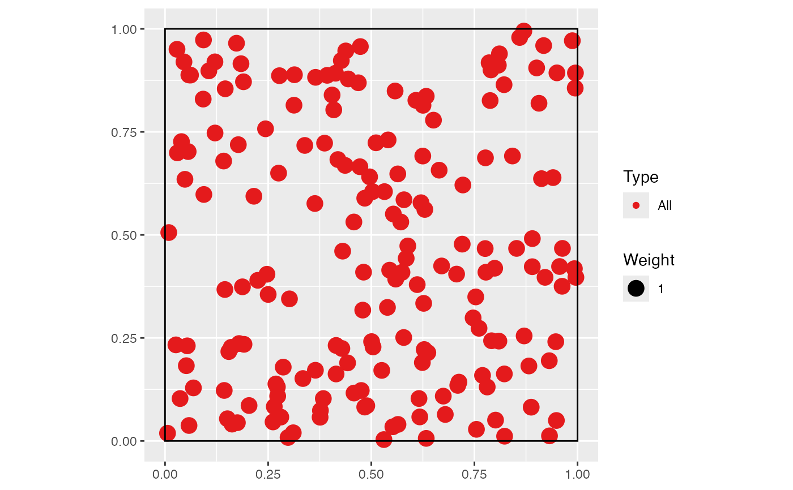
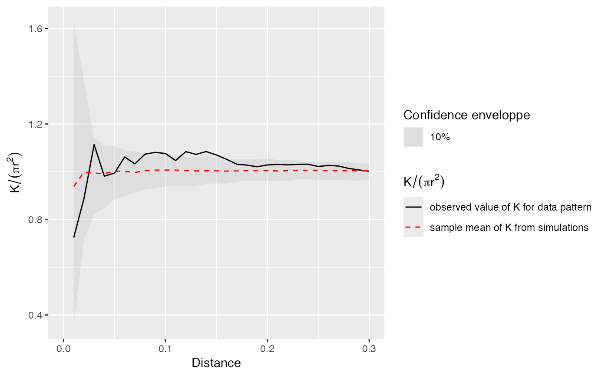

GoFtest.RdCalculates the risk to reject the null hypothesis erroneously, based on the distribution of the simulations.
GoFtest(Envelope)
| Envelope | An envelope object ( |
|---|
This test was introduced by Diggle(1983) and extensively developped by Loosmore and Ford (2006) for K, and applied to M by Marcon et al. (2012).
A p-value.
Diggle, P. J. (1983). Statistical analysis of spatial point patterns. Academic Press, London. 148 p.
Loosmore, N. B. and Ford, E. D. (2006). Statistical inference using the G or K point pattern spatial statistics. Ecology 87(8): 1925-1931.
Marcon, E., F. Puech and S. Traissac (2012). Characterizing the relative spatial structure of point patterns. International Journal of Ecology 2012(Article ID 619281): 11.
Eric Marcon <Eric.Marcon@ecofog.gf>
No support exists in the literature to apply the GoF test to non-cumulative functions (g, Kd...).
Ktest is a much better test (it does not rely on simulations) but it is limited to the K function against complete spatial randomness (CSR) in a rectangle window.
# Simulate a Matern (Neyman Scott) point pattern nclust <- function(x0, y0, radius, n) { return(runifdisc(n, radius, centre=c(x0, y0))) } X <- rNeymanScott(20, 0.2, nclust, radius=0.3, n=10) plot(X)# Calculate confidence envelope (should be 1000 simulations, reduced to 50 to save time) r <- seq(0, 0.3, 0.01) NumberOfSimulations <- 50 Alpha <- .10 Envelope <- KEnvelope(as.wmppp(X), r, NumberOfSimulations, Alpha)#> Generating 50 simulations by evaluating expression ... #> 1, 2, 3, 4, 5, 6, 7, 8, 9, 10, 11, 12, 13, 14, 15, 16, 17, 18, 19, 20, 21, 22, 23, 24, 25, 26, 27, 28, 29, 30, 31, 32, 33, 34, 35, 36, 37, 38, 39, 40, #> 41, 42, 43, 44, 45, 46, 47, 48, 49, 50. #> #> Done.# GoF test. Power is correct if enough simulations are run (say >1000). paste("p-value =", GoFtest(Envelope))#> [1] "p-value = 0.86"